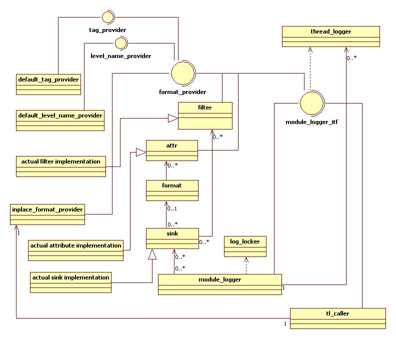

TABLE OF CONTENTS
1. Introduction
1.1 Terms
1.2 Features
1.3 Download
1.4 Kick start examples
2. Architecture of the library
2.1 Log module
module_logger()
self_t
set_level()
enable()
imbue_all()
set_format_all()
sink_t
sink_ptr
filter_ptr
add_sink()
set_tag()
add_filter_all()
set_level_name_provider()
set_tag_provider()
2.2 Log sink
self_t
filter_ptr
imbue()
set_format()
add_filter()
enable()
null_sink
wcout_sink
wcerr_sink
cout_sink
cerr_sink
ms_debug_sink
file_sink
size_file_sink
2.3 Log message format
format()
manip_t
operator <<
list of log attributes
2.4 Log tags
2.5 Log filters
enable()
module_is()
file_is()
level_is()
tag_is()
tag_exists()
message_contains()
message_not_contains()
not_filter()
or_filter()
3. Customization
3.1 Creating your own log levels
3.2 Creating your own tag support
3.3 Implementing a log sink
3.4 Implementing a log filter
1. ARCHITECTURE OF THE LIBRARY
Following is a brief UML overview of the library classes and interfaces. Points of interest are:
-
Each log module can have any amount of thread loggers, while each thread logger belongs only to one module. It
means that different log modules will have different thread logger for each thread.
-
Each log module can have any amount of sinks, and each sink may belong to different log modules.
-
Each sink may have a format, or may have no format at all. Several sinks may have the same format.
-
Format consists of zero or more log attributes.
-
There are default implementations for log level names, tags, filters, sinks, and attributes.
-
There is a global object, tl_caller, which manages log records and log modules by using C++ constructors and
destructors.

2.1 LOG MODULE
To perform logging, mlog only needs to know about log module interface. The interface is defined
with template parameter TCH, which specifies character type to use. There are three typedefs to help with
the interface declaration. Also there are three preprocessor macro functions to perform logging. To write log
messages you must include "log.h" and use the macro functions.
#include <log.h>
template<class TCH>
struct module_logger_itf
{ ... };
typedef module_logger_itf<wchar_t> wmodule_logger_itf;
typedef module_logger_itf<char> amodule_logger_itf;
typedef module_logger_itf<char> cmodule_logger_itf;
#define LOGW(LOGGER, LEVEL)
#define LOGA(LOGGER, LEVEL)
#define LOGC(LOGGER, LEVEL)
You don't need to use any functions from the interface to log messages. You should declare the interface
and use macro functions to do it. Each macro function returns a reference to std::basic_ostringstream<TCH> object,
and may be used to write log messages. Under WIN32/VC++, wchar_t logging classes can handle char strings, but under
CYGWIN they cannot.
extern mlog::cmodule_logger_itf& g_logger_ref;
...
LOGC(g_logger_ref, mlog::err) << "An error message: " << 556;
To setup the logging facility, you must create log modules, add sinks to them, and then
format and filter the sinks. Log module is implemented in module_logger class. The class is defined with
template parameter TCH, which specifies character type. There are three typedefs to help with log module
declaration. To setup mlog, you must include "log_system.h" It is important to understand that once
log module is used, its setup cannot be changed. For example, you cannot add new sinks to a log module,
if it has already been used with one of the LOG macro functions. Setup functions are not thread safe.
#include <log_system.h>
template<class TCH>
class module_logger : boost::noncopyable, public module_logger_itf<TCH>
{ ... };
typedef module_logger<char> cmodule_logger;
typedef module_logger<char> amodule_logger;
typedef module_logger<wchar_t> wmodule_logger;
Below is a list of module_logger members, which you can use to create and setup log modules.
-
module_logger(const TCH* name = NULL, int id = 0)
Constructor, which takes module name and module id. The parameters may be used in filters and log format.
name is a name of the log module
id is an integer identifier of the log module
mlog::cmodule_logger logger1("MY LOGGER", 5);
mlog::wmodule_logger logger2("LOG2");
-
typedef module_logger<TCH> self_t
Defines the type of this log module.
-
self_t& set_level(int level)
This function assigns new log level to the log module. Messages with levels above the new value will
be discarded. This function is thread safe and may be used in runtime. However, it is not guaranteed
to take effect immediately, old log level may be in effect during a short period of time, which may be
up to hundreds of milliseconds.
By default, there are 6 log levels defined: crit, err, warn, info, dbg, trace. Corresponding strings
are: "TRACE", "DEBUG", "INFO", "WARN", "ERROR", "CRITICAL". It is possible to use any other integer
as a level value, if you provide a custom level name interface, as described in
Creating your own log levels
level a new log level to assign to the log module
logger1.set_level(mlog::err);
logger2.set_level(mlog::trace);
-
void enable(bool enable)
Use this function to completely disable or enable log module. When a log module is disabled, log expressions
are not evaluated.
enable true to enable log module and false to disable it
logger2.enable(false);
logger2.enable(true);
-
self_t& imbue_all(const std::locale& new_locale)
This function imbues all sinks, which were previously added to the log module, with a new locale.
The log module also stores the locale to imbue other sinks during setup, and thread loggers in
runtime. This function is not thread safe and cannot be used after a thread uses the log module.
new_locale a new locale to use with sinks and thread loggers
logger1.imbue_all(std::locale("rus_Russia.866"));
logger2.imbue_all(std::locale("rus_Russia.1251"));
-
self_t& set_format_all(const format<TCH>& new_format)
This function sets format of all log sinks, which were previously added to the log module. It will not affect
sinks, added after you call the function.
The function is not thread safe and cannot be used after a thread uses the log module.
new_format a new format of all previously added log sinks
mlog::cformat cfmt;
cfmt << mlog::fp_message << std::endl;
logger1.set_format_all(cfmt);
mlog::wformat wfmt;
wfmt << mlog::fp_message << std::endl;
logger2.set_format_all(wfmt);
-
typedef sink<TCH> sink_t
Defines the type of log sink, which can be used with the log module.
-
typedef boost::shared_ptr<sink_t> sink_ptr
Defines the shared pointer type of log sink, which can be used with the log module.
-
typedef typename sink_t::filter_ptr filter_ptr
Defines the shared pointer type of log filter, which can be used with the log module and its sink_t type.
-
self_t& add_sink(sink_ptr new_sink)
Adds a new sink to the log module. The sink is imbued by the module's locale.
This function is not thread safe and cannot be used after a thread uses the log module.
new_sink shared pointer to a new sink, which will be added to the log module
mlog::cmodule_logger::sink_ptr pcsink(new mlog::cout_sink);
logger1.add_sink(pcsink);
-
self_t& add_sink(sink_t* psink)
Adds a new sink to the log module, and takes ownership of the pointer. The sink is imbued by the module's locale.
This function is not thread safe and cannot be used after a thread uses the log module.
psink pointer to a new sink, which will be added to the log module
logger2.add_sink(new mlog::wcout_sink);
-
void set_tag(const TCH* name, const TCH* value)
Sets a tag, identified by its name, to a new string value. If there is no such tag a new one will be created.
This function is thread safe, if the tag provider of the log module is thread safe.
name the name of the tag to be changed or added
value the string value to be assigned to the tag
logger2.set_tag(L"system_state", L"starting");
-
void set_tag(int id, const TCH* value)
Sets a tag, identified by an integer value, to a new string value. If there is no such tag a new one will be created.
This function is thread safe, if the tag provider of the log module is thread safe.
id the integer identifier of the tag to be changed or added
value the string value to be assigned to the tag
logger1.set_tag(1, "first stream initialized");
-
self_t& add_filter_all(filter_ptr pfilter)
Adds a new filter to all sinks, which were previously added to the log module. A list of filters is cheked using AND
logical operation. See Log filters for more information. This function will
not affect sinks, added after you call it.
The function is not thread safe and cannot be used after a thread uses the log module.
pfilter a new filter to add to all existing sinks
logger1.add_filter_all(mlog::message_not_contains("NEVER LOGGED"));
logger2.add_filter_all(mlog::message_not_contains(L"NEVER LOGGED"));
-
self_t& set_level_name_provider(std::auto_ptr< level_name_provider<TCH> > prov)
This function stores a pointer to log level name provider, which is used to convert log levels to string representation.
There is a default implementation, it is assigned during log module construction.
You must use this function to provide custom convertion of an integer log level value to string.
See Creating your own log levels for more information.
This function is not thread safe and cannot be used after a thread uses the log module.
prov pointer to a new log level name provider
-
self_t& set_tag_provider(std::auto_ptr< tag_provider<TCH> > prov)
Stores a pointer to log tag provider, which is used to resolve tag names and integer tag ids into their string values.
There is a default implementation, it is assigned during log module construction.
You must use this function to provide custom tag support.
See Creating your own tag support for more information.
This function is not thread safe and cannot be used after a thread uses the log module.
prov pointer to a new log tag provider
2.2 LOG SINK
Log sinks are used to write formatted log records to different destinations like file, console, debug window, and so on.
Each sink has a mutex, which is used when many threads attempt to write log records. Each thread locks sinks in a log module one by one,
releasing previous lock when the next lock has been acquired. It allows several threads to write to different sinks simultaneously.
Each sink may have its own set of filters and its own format. Sink itself is an abstract class, defined with template parameter TCH, which
specifies character type.
template<class TCH>
class sink
{ ... };
Below is a list of sink members, which you can use to create and setup log sinks.
-
typedef sink<TCH> self_t
Defines the type of this log sink.
-
typedef boost::shared_ptr< filter<TCH> > filter_ptr
Defines the type of log filter, which can be used with the log sink.
-
virtual self_t& imbue(const std::locale& new_locale)
This function imbues the log sink with a new locale. Some log sinks also store the locale to imbue their inner
structures in runtime. You may override this function, when implementing your own sinks, but you must
call the base function. See Implementing a log sink for details.
This function is not thread safe and must not be used after a thread uses the log module, to which the sink belongs.
new_locale a new locale to use with sinks and thread loggers
mlog::cmodule_logger::sink_ptr file_sink(new mlog::const_cfile_sink("log_file_name"));
file_sink->imbue(std::locale());
-
self_t& set_format(const format<TCH>& new_format)
Sets format of this log sink.
This function is not thread safe and must not be used after a thread uses the log module, to which the sink belongs.
new_format a new format of the log sink
file_sink->set_format(mlog::cformat() << std::setw(80) << mlog::fp_message << std::endl);
-
self_t& add_filter(filter_ptr pfilter)
Adds a new filter to the log sink. Each sink has a list of filters, and applies them one by one using operator AND.
See Log filters for more information.
This function is not thread safe and must not be used after a thread uses the log module, to which the sink belongs.
pfilter a new filter to add to the sink
file_sink->add_filter(mlog::level_is(mlog::info));
-
void enable(bool on)
Use this function to turn a sink on and off. If the sink is turned off, it doesn't rotate and its
write_string() function is not called. However,
set_format_all() and imbue_all()
will work even when the sink is not enabled.
It is not guaranteed that the sink will be disabled immediately, it may take up to hundreds of milliseconds.
on a boolean value, true to turn the sink on (default) and false to turn it off
// turn the sink off
pcsink->enable(false);
There are several sinks implemented in mlog:
-
template<class TCH>
class null_sink : public sink<TCH>
{ ... };
typedef null_sink cnull_sink;
typedef null_sink anull_sink;
typedef null_sink wnull_sink;
This sink doesn't write anywhere. Good for testing.
new mlog::wnull_sink;
-
class wcout_sink : public sink<wchar_t>
{ ... };
This sink writes strings to std::wcout, unicode version of standard output stream.
new mlog::wcout_sink;
-
class wcerr_sink : public sink<wchar_t>
{ ... };
This sink writes strings to std::wcerr, unicode version of standard error stream.
new mlog::wcerr_sink;
-
class cout_sink : public sink<char>
{ ... };
This sink writes strings to std::cout
new mlog::cout_sink;
-
class cerr_sink : public sink<char>
{ ... };
This sink writes strings to std::cerr
new mlog::cerr_sink;
-
template<class TCH>
class ms_debug_sink : public sink<TCH>
{ ... };
Microsoft specific sink, which writes messages to a debug window in Visual Studio.
new mlog::ms_debug_sink;
-
template<class rotate_policy, class name_policy, class TCH>
class file_sink : public sink<TCH>
{
typedef typename name_policy::char_type name_type;
file_sink(const name_type* prefix, const name_type* suffix, bool allow_buffer);
...
};
This is a sink, which writes messages to file and uses date and time based log rotation. In addition to character type, it has two more template arguments:
time based rotation policy and naming policy. Its constructor accepts two strings, which define filename prefix and suffix. Suffix should include the '.' character.
rotate_policy is used to tell, when file rotation is needed, it must define
bool operator()(const detail::time_type* ptime)
name_policy is used to generate file names, it should have a template parameter, which specifies
charater type to use with file open functions, and it must have one operator and one typedef
const TCH* operator()(const TCH* prefix, const TCH* suffix, bool rotate)
typedef TCH char_type;
prefix is log file name prefix, for example "daylog" will become "daylog-2008-04-10.log"
suffix is log file name suffix, including the '.' character, by default it is ".log"
allow_buffer is a flag, which specifies if the file is flushed each time a log record is written into it, defaults to false
There are several predefined file sinks, which allow to create sinks, which rotate files each day, each month, and never rotate.
typedef file_sink<day_rotation, day_filename<char>, wchar_t> day_wfile_sink;
typedef file_sink<day_rotation, day_filename<char>, char> day_afile_sink;
typedef file_sink<day_rotation, day_filename<char>, char> day_cfile_sink;
typedef file_sink<month_rotation, month_filename<char>, wchar_t> month_wfile_sink;
typedef file_sink<month_rotation, month_filename<char>, char> month_afile_sink;
typedef file_sink<month_rotation, month_filename<char>, char> month_cfile_sink;
typedef file_sink<const_rotation, const_filename<char>, wchar_t> const_wfile_sink;
typedef file_sink<const_rotation, const_filename<char>, char> const_afile_sink;
typedef file_sink<const_rotation, const_filename<char>, char> const_cfile_sink;
new mlog::const_cfile_sink("const_file", ".log");
new mlog::day_wfile_sink("output", ".txt");
new mlog::month_cfile_sink("month");
-
template<class TCH, class TNCH>
class size_file_sink : public file_sink<size_rotation, rotate_filename<TNCH>, TCH>
{
size_file_sink(unsigned long max_size, int max_files, const TNCH* prefix,
const TNCH* suffix, bool allow_buffer);
};
typedef size_file_sink<wchar_t, char> size_wfile_sink;
typedef size_file_sink<char, char> size_afile_sink;
typedef size_file_sink<char, char> size_cfile_sink;
This is a sink, which writes messages to file and uses file size based log rotation. It has two template arguments, which specify
character type to use with logging and with file naming. Its constructor accepts two strings, which define filename prefix and suffix.
Suffix should include the '.' character.
max_size is a maximum size of one file, in bytes
max_files is a maximum number of files to keep, it must be greater than 0
prefix is log file name prefix, for example "rotatelog" will become "rotatelog.log", "rotatelog.log.1", "rotatelog.log.2" and so on
suffix is log file name suffix, including the '.' character, by default it is ".log"
allow_buffer is a flag, which specifies if the file is flushed each time a log record is written into it, defaults to false
// log.log, 1 megabyte, 10 files max
new mlog::size_cfile_sink(1024*1024, 10, "log");
// output.txt, 10 megabytes, 4 files max
new mlog::size_wfile_sink(1024*1024*10, 4, "output", ".txt");
2.3 LOG FORMAT
Log format is a set of rules, used to convert a log record into text. Format in mlog consists
of prefix, user message and suffix. Prefix, suffix or both may be skipped. Only one log message may appear in
a log format. As mentioned several times before, each sink in mlog can have its own format. To format sinks,
you must create an instance of the format class and then use insertion operator << to insert formatting
rules. You may insert any type in format, if it is supported by iostreams, including manipulators. (It means that by
implementing custom iostream manipulators you can fully customize your log formatting.)
After creation, each inserted type goes into prefix, and when you insert fp_message, format stops recording prefix and starts
recording suffix.
Format is defined with template parameter TCH, which specifies character type.
template<class TCH>
class format
{ ... };
typedef format<wchar_t> wformat;
typedef format<char> aformat;
typedef format<char> cformat;
Below is a list of format members, which you can use to create and setup log format.
This is a list of log attributes, which you can insert into log format. After you insert
fp_message, format stops recording prefix and begins to record suffix.
- fp_file a full path to the source file, where a call to log appears
- fp_file_short short file name, without a path
- fp_short synonym for fp_file_short
- fp_line line, on which log message appears
- fp_func full qualified C++ function name, supported only on WIN32
- fp_day day as two decimal numbers 01-31
- fp_month month as two decimal numbers 01-12
- fp_year year as four decimal numbers 2008
- fp_hour hour as two decimal numbers 00-23
- fp_minute minutes as two decimal numbers 00-59
- fp_second seconds as two decimal numbers 00-59
- fp_milli milliseconds as three decimal numbers 000-999
- fp_level log level as an integer value
- fp_level_name log level name, returned by log level name provider
- fp_newline newline, equivalent to std::endl
- fp_thread id of the calling thread
- fp_pid id of the calling process
- fp_module name of the logging module, which is used to log messages
- fp_module_id integer id of the logging module, which is used to log messages
- fp_message log message, only one message allowed per log format
- tag(const TCH* name) value of the tag, identified by string name
- tag(int id) value of the tag, identified by integer
mlog::cformat() << '[' << mlog::fp_day << '.' << mlog::fp_month << '.' << mlog::fp_year << ' ' <<
mlog::fp_hour << ':' << mlog::fp_minute << ':' << mlog::fp_second << ',' << mlog::fp_milli <<
"] [" << std::setfill(' ') << std::left << std::setw(8) << mlog::fp_level_name << "] " <<
mlog::fp_message <<
" (" << mlog::fp_file_short << '@' << mlog::fp_line << ')' << mlog::fp_newline
// this example format produces log messages, which look like
// [13.05.2008 17:05:42,402] [ERROR ] Error message (test.cpp:178)
// [13.05.2008 17:05:42,402] [INFO ] Info message (test.cpp:180)
2.4 LOG TAGS
Log tag is a marked text data, which may change during program execution. Tag may be identified by an
integer value, for performance, or by a string. This mechanism may be used to identify different global conditions
in a program. With current tag implementation, mlog guarantees that all calls to LOGC, LOGA or LOGW made after
set_tag() function has returned, will have the modified tag value. Normally, you don't
need to create any objects to use tags, log format and log module manage tags for you. The following example demonstrates
how tags may be used to log a global program state. Note that state is changed after we change the tag value.
mlog::cmodule_logger logger;
logger.add_sink(new mlog::cout_sink);
// define the state of our process
int process_state = 0;
// define a tag name, which will be used to identify global process state
const char ps_tag[] = "process_state";
// insert the state tag into format
logger.set_format_all(mlog::cformat() << '[' << mlog::tag(ps_tag) << "] " << mlog::fp_message << std::endl);
// set initial tag value
logger.set_tag(ps_tag, "starting");
// log messages
LOGC(logger, mlog::warn) << "This message is logged when system is starting";
// now first change the tag value, and then change the process state
logger.set_tag(ps_tag, "started");
process_state = 1;
// log messages
LOGC(logger, mlog::warn) << "This message is logged when the system has started";
// output is:
//[starting] This message is logged when system is starting
//[started] This message is logged when the system has started
2.5 LOG FILTERS
Log filter is a predicate, which belongs to one or more sinks. The predicate is used to filter
log records, which pass through the log sinks. A sink can have zero or more filters in a list. Each filter in the list
must allow
a message to pass for the message to be written to the sink's destination. It means the list of filters is combined
with logical AND. To improve filtering performance, mlog has two types of filtering. First type
processes log attribute values and may be fast, when comparing integer values. Second type processes only log messages
and is always slow, because it usually searches for a substring. It is not possible to filter log attributes'
integer values by their string representation.
This is a list of log filters, which you can insert into log module. You can insert filters
by calling add_filter_all() function or add_filter() function.
-
template<class TCH>
boost::shared_ptr< filter<TCH> > module_is(const TCH* name)
Matches module name against the provided string. Log record is allowed only if module name is the same as the provided string.
name a string to compare with module name
logger1.add_filter_all(mlog::module_is("MY LOGGER"));
logger2.add_filter_all(mlog::module_is(L"LOG2"));
-
template<class TCH>
boost::shared_ptr< filter<TCH> > module_is(int id)
Matches module integer id against the provided value. Log record is allowed only if module id is the same as the provided integer.
id an integer value to compare with module id
logger1.add_filter_all(mlog::module_is<char>(5));
logger2.add_filter_all(mlog::module_is<wchar_t>(0));
-
template<class TCH>
boost::shared_ptr< filter<TCH> > file_is(const TCH* name)
Matches short file name and the provided string. Log record is allowed only if file name is the same as
the provided string.
name a string to compare with file name
logger1.add_filter_all(mlog::file_is("test.cpp"));
logger2.add_filter_all(mlog::file_is(L"test.cpp"));
-
template<class TCH>
boost::shared_ptr< filter<TCH> > level_is(int level)
This filter allows log record only if its severity level is the same as the provided integer.
level an integer value to compare with level of the log record being processed
logger1.add_filter_all(mlog::level_is<char>(mlog::err));
logger2.add_filter_all(mlog::level_is<wchar_t>(mlog::warn));
-
template<class TCH>
boost::shared_ptr< filter<TCH> > tag_is(const TCH* tag_name, const TCH* tag_val)
Checks if the value of tag, identified by a string name, is the same as provided string. If tag doesn't
exists, its value is an empty string, and may be successfully compared to "".
tag_name name of the tag to check
tag_val a string, which must match the value of the tag; if the string is empty, it will successfuly
match to tags, which don't exist
logger1.add_filter_all(mlog::tag_is("test_tag", "contents of a test tag"));
-
template<class TCH>
boost::shared_ptr< filter<TCH> > tag_exists(const TCH* tag_name)
Checks if tag, identified by name, exists.
tag_name name of the tag to check
logger1.add_filter_all(mlog::tag_exists("tag_must_exist")));
-
template<class TCH>
boost::shared_ptr< filter<TCH> > tag_is(int tag_id, const TCH* tag_val)
Checks if the value of tag, identified by an integer, is the same as provided string. If tag doesn't
exists, its value is an empty string, and may be successfully compared to "".
tag_id identifier of the tag to check
tag_val a string, which must match the value of the tag; if the string is empty, it will successfuly
match to tags, which don't exist
logger2.add_filter_all(mlog::tag_is(1, "starting"));
-
template<class TCH>
boost::shared_ptr< filter<TCH> > tag_exists(int tag_id)
Checks if tag, identified by an integer, exists.
tag_id identifier of the tag to check
logger2.add_filter_all(mlog::tag_exists(7));
-
template<class TCH>
boost::shared_ptr< filter<TCH> > message_contains(const TCH* str)
This filter checks log messages for containing the provided string. A log record is allowed only if log message,
corresponding to the log record, contains the string. Note that the filter works only with log string, created
by user. It doesn't check formatted prefix and suffix.
str string to search in log message
logger1.add_filter_all(mlog::message_contains("."));
LOGC(logger1, mlog::info) << "This message never passes the filter, no matter how log sinks are formatted";
LOGC(logger1, mlog::info) << "This message always passes the filter.";
-
template<class TCH>
boost::shared_ptr< filter<TCH> > message_not_contains(const TCH* str)
This filter is just a boolean negation of message_contains filter. It checks that message doesn't contain the
provided substring. Note that the filter works only with log string, created by user. It doesn't check
formatted prefix and suffix.
str string to search in log message
logger2.add_filter_all(mlog::message_not_contains(L"You will never see this in log"));
LOGW(logger2, log::warn) << L"You will never see this in log";
-
template<class TCH>
boost::shared_ptr< filter<TCH> > not_filter(boost::shared_ptr< filter<TCH> > pfilter)
This is a logical NOT operation. The result of calling this function is another
filter, which allows log record only when its internal filter doesn't allow it.
pfilter inner filter, result of which is negated
// allows all log records, except those with info log level
logger1.add_filter_all(mlog::not_filter(mlog::level_is(mlog::info)));
-
template<class TCH>
boost::shared_ptr< mlog::filter<TCH> > operator~(boost::shared_ptr< mlog::filter<TCH> > pfilter)
This is a logical NOT operation, same as above, but more readable. The reason behind using operator~() instead of
operator!() is that boost::shared_ptr already has operator!() defined. However, operator!() for filters will be
implemented in future releases.
pfilter inner filter, result of which is negated
// allows all log records, except those with info log level
logger1.add_filter_all(~mlog::level_is(mlog::info));
-
template<class TCH>
boost::shared_ptr< filter<TCH> > or_filter(boost::shared_ptr< filter<TCH> > pleft,
boost::shared_ptr< filter<TCH> > pright)
This is a logical OR operation. It allows log records, if either of its inner filters allow it. First it checks
left filter, and then right, if needed.
pleft left inner filter, it is checked first
pright right inner filter, it is checked second, and only if the left filter doesn't allow the log record
to pass
// this filter always allows log records to pass
logger1.add_filter_all(mlog::or_filter(mlog::message_contains("."), mlog::message_not_contains(".")));
-
template<class TCH>
boost::shared_ptr< mlog::filter<TCH> > operator||(boost::shared_ptr< mlog::filter<TCH> > pleft,
boost::shared_ptr< mlog::filter<TCH> > pright)
This is a logical OR operation, same as above, but more readable.
pleft left inner filter, it is checked first
pright right inner filter, it is checked second, and only if the left filter doesn't allow the log record to pass
// this filter always allows log records to pass
logger1.add_filter_all(mlog::message_contains(".") || mlog::message_not_contains("."));
This is a simple example, which demonstrates how to use log filters to redirect log messages
of different log levels to different files.
mlog::cmodule_logger logger;
logger.add_sink(new mlog::cout_sink);
// add two file sinks, which will records only error and only warning messages
mlog::cmodule_logger::sink_ptr perr(new mlog::const_cfile_sink("errors"));
logger.add_sink(perr);
mlog::cmodule_logger::sink_ptr pwarn(new mlog::const_cfile_sink("warnings"));
logger.add_sink(pwarn);
// format sinks in a simple way
logger.set_format_all(mlog::cformat() << '[' << std::left << std::setw(8) << mlog::fp_level_name << "] " <<
mlog::fp_message << std::endl);
// add filters to sinks, to allow only messages with specified log level
perr->add_filter(mlog::level_is(mlog::err));
pwarn->add_filter(mlog::level_is(mlog::warn));
// write log messages
LOGC(logger, mlog::err) << "Error message";
LOGC(logger, mlog::warn) << "Warning message";
LOGC(logger, mlog::info) << "Information message, it is not written in files";
<<< TOP